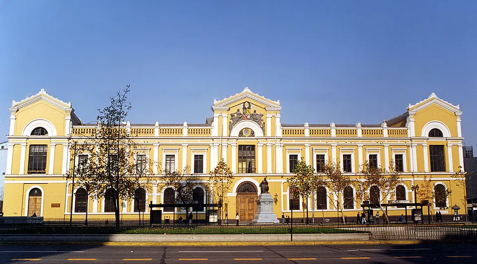

Fundación de la Universidad de Chile

La ley que creó la Universidad de Chile fue promulgada el 19 de noviembre de 1842, durante el gobierno de Manuel Bulnes, a iniciativa del ministro de Instrucción Pública Manuel Montt. Reemplazó a la colonial Real Universidad de San Felipe y se instaló solemnemente el 17 de septiembre de 1843, con Andrés Bello como primer rector, cargo que ejerció hasta su muerte en 1865.
Se organizó en cinco facultades: Filosofía y Humanidades, Ciencias Matemáticas y Físicas, Medicina, Leyes y Ciencias Políticas, y Teología. En sus inicios funcionó más como una academia y superintendencia de la educación nacional que como un centro de docencia: debía supervisar la enseñanza, producir conocimiento sobre el país y fomentar las ciencias y las letras. La enseñanza superior se impartía principalmente en el Instituto Nacional.
Su fundación formó parte del proyecto del Estado conservador de formar elites ilustradas y ciudadanos, junto con la Escuela Normal de Preceptores (1842), dirigida por el argentino Domingo Faustino Sarmiento. Coincidió con el movimiento intelectual conocido como Generación de 1842, que debatió sobre la lengua, la historia y la identidad nacional.
Versión para niños
El 19 de noviembre de 1842 se creó por ley la Universidad de Chile, en Santiago. Su primer rector fue Andrés Bello, un sabio nacido en Caracas que amaba los libros y el idioma. La universidad debía cuidar que la educación del país fuera buena y fomentar el estudio de las ciencias, las leyes, la medicina y las letras. Al principio no era como las universidades de hoy, con salas llenas de estudiantes: era un grupo de sabios que guiaba la enseñanza.
Para maestros
Nivel sugerido: 1° medio
Objetivo: Comprender el rol de la Universidad de Chile y de la educación en la construcción del Estado-nación durante el siglo XIX.
Preguntas para la clase:
- ¿Por qué un Estado recién formado consideraba importante tener una universidad?
- ¿En qué se diferenciaba la Universidad de Chile de 1842 de una universidad actual?
- ¿Qué grupos sociales tenían acceso a la educación en esa época y quiénes quedaban fuera?
Actividad (20–30 min): Lectura guiada de un fragmento breve del discurso de instalación de Andrés Bello (1843). Los estudiantes identifican las ideas sobre ciencia, patria y educación, y las relacionan con el contexto de la República Conservadora en un esquema.
Fuentes sugeridas: Memoria Chilena; Biblioteca Nacional Digital; Archivo Central Andrés Bello de la Universidad de Chile.
Objetivos de Aprendizaje (Currículum Nacional)
- 6° básico · HI06 OA 04 Investigar sobre algunos aspectos culturales del siglo XIX, como los avances en educación y la fundación de instituciones … Andrés Bello
- 1° medio · HI1M OA 11 Analizar cómo el desarrollo … del sistema educacional, contribuyeron a expandir y profundizar la idea de nación durante el siglo XIX en Chile
- 1° medio · HI1M OA 12 Describir los procesos de exploración y reconocimiento del territorio que impulsó el Estado … e instituciones como la Universidad de Chile
Personajes
Revisión humana pendiente. Cómo se revisa · Reportar un error
Cómo citar: Historia de Chile. (2026). Fundación de la Universidad de Chile. En Historia de Chile: atlas y línea de tiempo. https://moises-salgado.github.io/historia-de-chile/momento/fundacion-de-la-universidad-de-chile.html